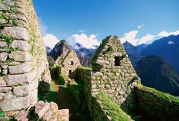
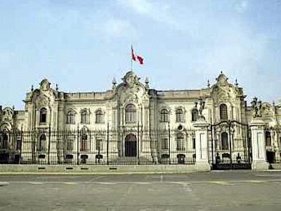
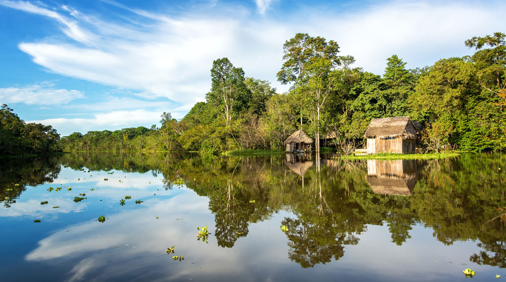
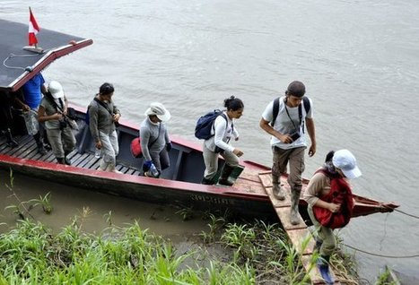

Definición:
El Turismo está dirigida principalmente hacia los monumentos arqueológicos,
´ se constituye en la tercera industria más grande de la nación.
Perú cuenta con más de cien mil sitios de interés, además del ecoturismo
en la Amazonía peruana, el turismo cultural en las ciudades coloniales,
turismo gastronómico, turismo de aventura y turismo de playa.
El índice de satisfacción de los turistas después de visitar el Perú
es del 94%. Es la industria de más rápido crecimiento en el Perú,
creció anualmente a un ritmo del 25% en los últimos cinco años,
siendo la tasa de crecimiento más alto que cualquier otro país en América del Sur.
Principales Atractivos
|  |  |  |
 |  |
| Cuzco | Palacio de Gobieno | Iquitos | Amazonas | Pucallpa |
Otros Destinos
- Cajamarca
- Madre de Dios
- Tacna
- Piura
- Arequipa